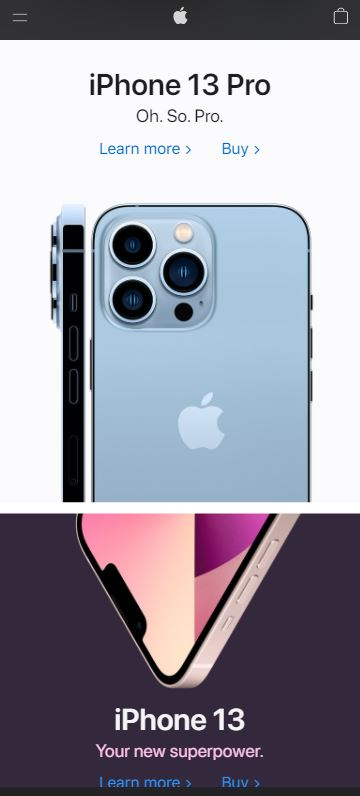
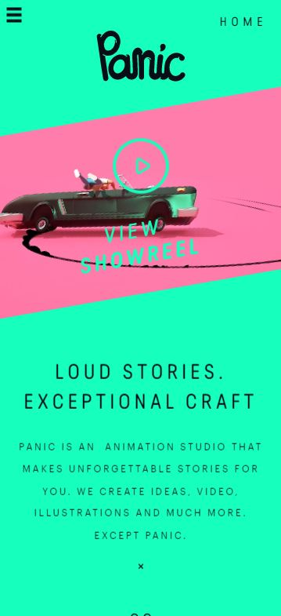

Visual Hierarchy
Slack
slack.com
The Slack website is a great example of a site that uses hierarchy to rank content in order of importance.
In the banner section, they have the largest header with additional information and some calls to action that make this area feel like the most important.
In addition to font size, you can also use different font weights to make fonts of the same size appear heavier or lighter and thus get the user's attention.
White Space and Clean Designy
Apple
apple.com 
By using blanks, the user only has one focus at a time. There are no distractions here.
White space contributes to the tone of the overall design. Websites with large amounts of macro white space can reflect minimalism and luxury.
Contrast
Panic
panicstudio.tv The readability of the text is based on a significant contrast with its background. Despite not using common colors such as mint and pink, there is a contrast and the text is legible